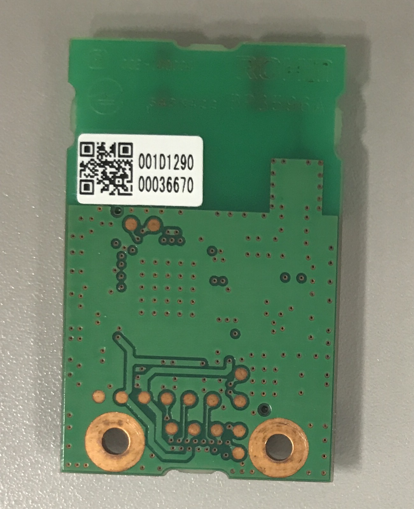

SUBGHZ_MSG SubGHz.send64le(uint8_t *dstAddr,
uint8_t *data, uint16_t len, void (*callback)(uint8_t rssi, uint8_t status));
SUBGHZ_MSG SubGHz.send64be(uint8_t *dstAddr,
uint8_t *data, uint16_t len, void (*callback)(uint8_t rssi, uint8_t status));
64bitのMACアドレスでデータを送信するための関数です。
send64leは、dstAddrをリトルエンディアンで指定します。
send64beは、dstAddrをビックエンディアンで指定します。
ビックエンディアン指定する場合
uint8_t dstAddr[8] = {0x00, 0x1D, 0x12, 0x90, 0x00,0x03,0x66, 0x70};
リトルエンディアン指定する場合
uint8_t dstAddr[8] = {0x70,0x66,0x03,0x00,0x90,0x12,0x1D,0x00};

64bit (8バイト)の送信先アドレスが格納された配列の先頭ポインタを指定してください。
送信データの先頭アドレス(ポインタ)を指定してください。
uint16_t len
dataの長さを指定してください。
Lazuriteで一回に送信できるデータのサイズはヘッダ情報を含めて250バイトです。
void (*callback)(uint8_t rssi, uint8_t status)
受信完了時にコールバックされる関数を指定することができます。通常はNULLを指定してください。
callback処理内では割り込みを使用することができないため、通常の処理をこの中に入れないようお願いします。
受信完了時のcallback関数を指定します。
通常はNULLで使用してください。
SUBGHZ_MSG 変数を参照してください。
サンプルプログラムのWelcome_SubGHz64で使用しています。
このサンプルプログラムでは、 001d 1290 0004 7fadのアドレスに 64bitアドレスでデータを送信しています。